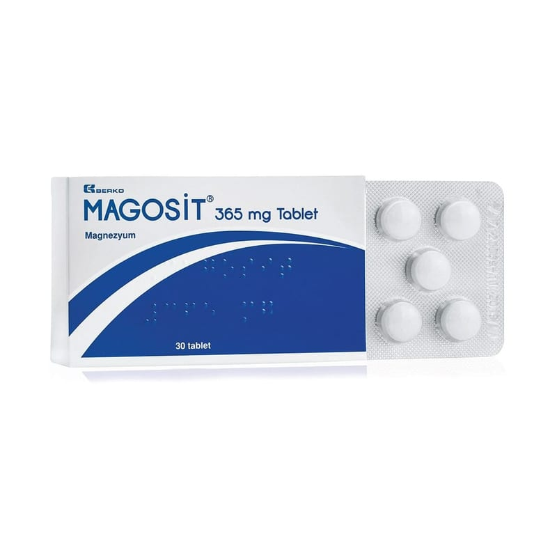

Magosit 365 mg Tablet, 30 Adet

Ne için kullanılır
KT · Bölüm 1MAGOSİT etkin madde olarak magnezyum oksit içerir.
Magnezyum, mineral destek ürünleri olarak isimlendirilen ilaç grubuna dahildir.
Sedefli beyazımsı renkte, parlak, film kaplı, yuvarlak film kaplı tabletler şeffaf PVC/PE/PVDC- alüminyum folyo blisterlerde sunulmaktadır. Her bir karton kutu 30 film kaplı tablet içerir.
MAGOSİT, • Magnezyum eksikliğinde ortaya çıkan belirtilerin (semptomların) giderilmesi • Kalp ve damar sisteminde: Kalp atımının hızlanması, kalp atım düzensizliği, kalp krizi, kalbi besleyen damarların daralması/tıkanması ile ortaya çıkan göğüs ağrısı (anjina pektoris), hafif şiddette yüksek tansiyon
• Sinir ve kaslar: Kaslarda ani ve aşırı kasılmalar (tetani), kaslarda kramp oluşumu, mide- bağırsak krampları, kas ve sinirlerin artmış uyarılabilirliği, baldır krampları, yeni doğmuş ve küçük çocuklardaki kramplı durumlar ve stres • Kadın hastalıkları, doğum ve gebelik ile ilgili: Zamanından önce (pre-term) kasılmalar, rahim ağzı yetmezliği, erken zar yırtılması, gebelikte kasılmalar (eklampsi [gebelikte havale nöbetleri, kan basıncı artışı, idrarda protein bulunması ve vücudun su tutmasıyla seyreden hastalık]/pre-eklampsi [gebelikte kan basıncı artışı, idrarda protein bulunması ve vücudun su tutmasıyla seyreden hastalık]), döl yatağı kasını gevşeten betamimetik türü ilaç kullanımını gerektiren döl yatağı kasılmalarının durdurulması, ağrılı adet görme • Ortopedi: Kireçlenme ve kemikleşmeler • Böbrek taşı oluşumunun önlenmesi (kalsiyum oksalat ürolitiazis tekrarının önlenmesi) • Şeker hastalığı tedavisi ve bir çeşit baş ağrısı olan migren
durumlarının tedavisinde kullanılır.